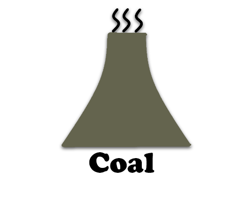

Environment:
Solar energy is much better for the environment, there is no smoke produced when they create electricity.
While there is some damage to the environment caused by solar plants when they are built, it is nothing compared to the impact of building new coal plants and getting coal to burn in them.
Solar plants produce all their power from the sun, this means that there is nothing released into the air which could stay there and cause warming.
Antarctica's ice is safe!
The only problem is solar plants take up a lot of space for the solar panels.
The alternative:
Future:
With coal becoming so unreliable we are going to have to switch to some other source of electricity.
Current solar power stations are far newer than the current coal power stations.
The aging coal power stations are making this the best time to build new solar plants instead of new coal plants. The solar plants will last well into the future and will be far more reliable for a longer time than the coal plants.
The alternative:
Cost:
Solar plants will cost more in the short term because they need to be built, however this cost would got to maintaining the current coal plants if they are continued being used.
Building new coal power stations will cost just as much, even more then building new solar plants.
The cost of electicity to the user will be much lower with solar because they need less maintenance and the source of evergy doesn't need to be gathered. The cost to people is $78 per MW for solar. The cost of coal per MW is up to $352 per MW. You'd be mad not to want solar.
It's like trying to sell a gummy bear for $10 when someone else is selling it for 10c, or buying Fortnite for $20 when you could download it for free!